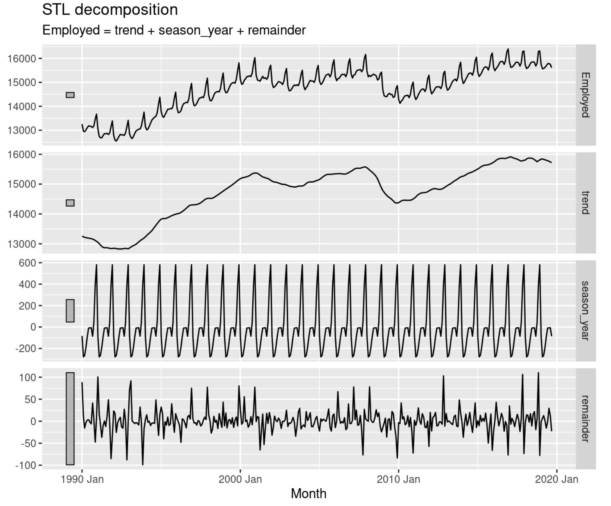
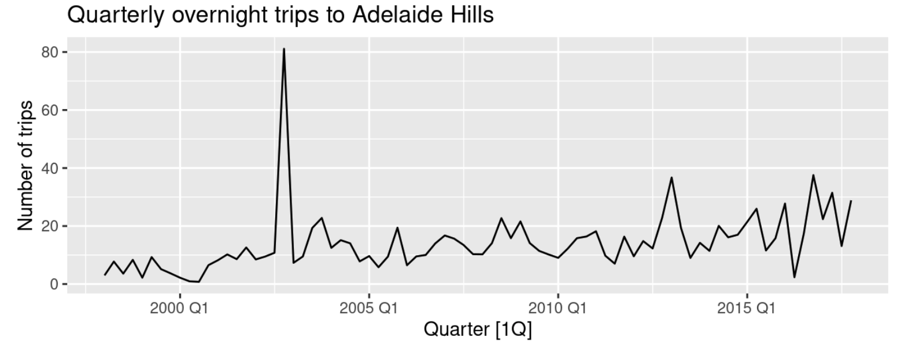
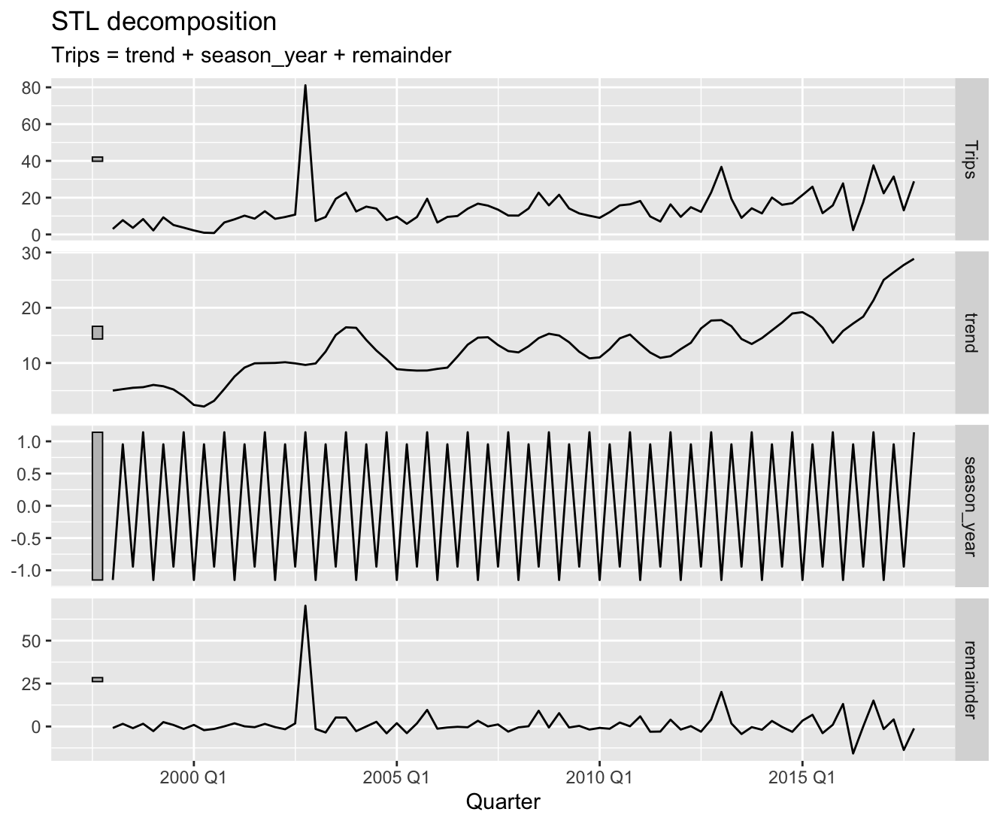
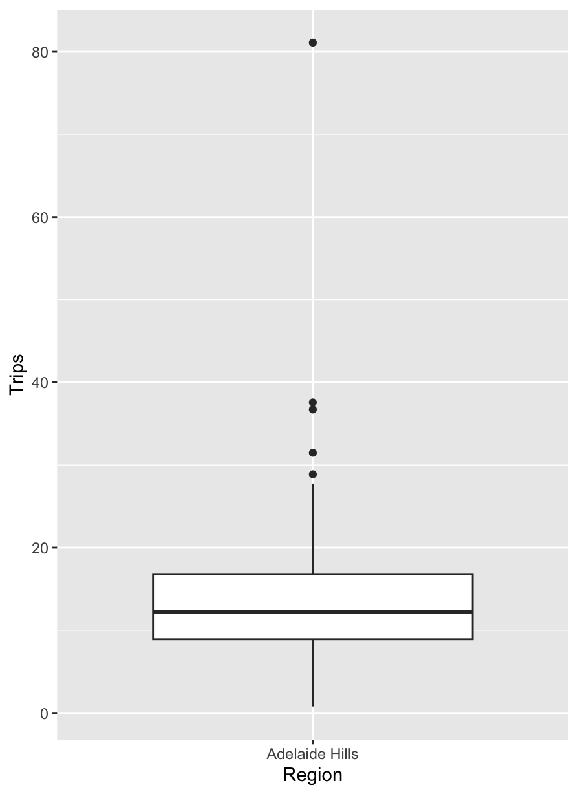
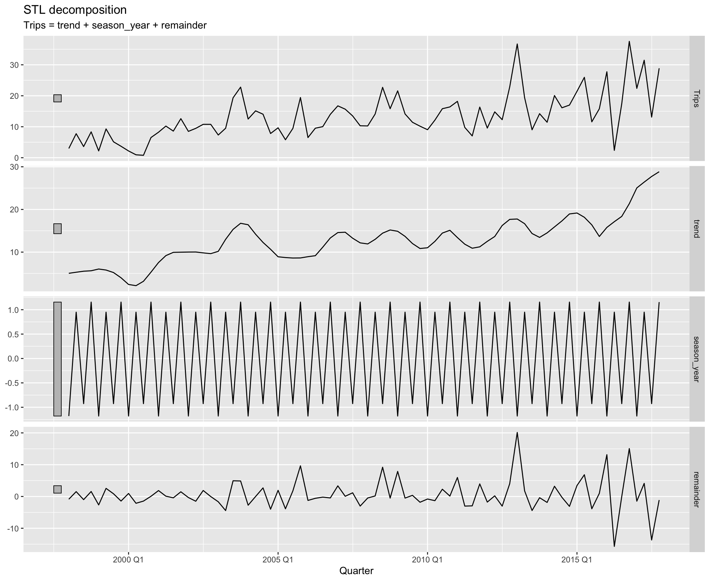
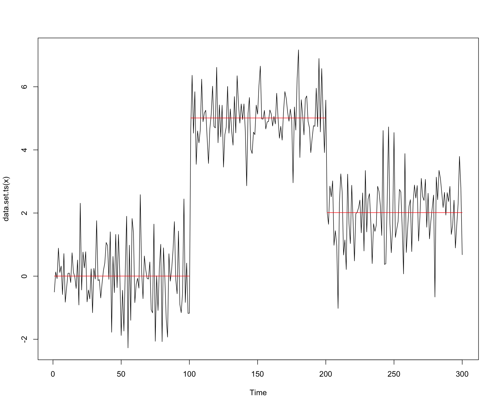

시계열 자료분석을 활용한 고객 관심사의 선제적 반영
시계열 분해, 이상점 탐지 및 대치, 변화점 탐지를 활용해 고객 관심사를 선제적으로 반영할 수 있었어요.
오늘은 고객들의 관심사를 선제적으로 반영하는 부분에 사용한 시계열 자료분석1의 몇 가지 방법론을 소개해드리려고 합니다. 3가지 방법론에 대해 이야기해 보려고 해요:
시계열 분해(Time Series Decomposition)
이상점 탐지 및 대치(Outlier Detection and Imputation)
변화점 탐지(Change Points Detection)
위 3가지 방법론들을 적절히 활용하여 고객 관심사를 선제적으로 반영해야하는 문제를 해결할 수 있었는데요. 먼저 해당 문제가 등장한 배경에 대해서는 간략하게 말씀을 드려보겠습니다.
저희 팀에서는 요즘 모바일 홈 개인화에 집중하고 있어요. 모바일 홈 개인화는 G마켓 모바일웹/앱의 홈 메인에서 스크롤을 조금 내렸을 때 보이는 슈퍼딜 영역2을 개인화하는 프로젝트에요. 여기서 말하는 개인화는 각 고객님들이 남긴 데이터를 바탕으로 관심을 가질만한 상품들을 순차적으로 띄워주는 것을 말해요. 관심 있을만한 상품들을 좋은 가격에 최대한 손쉽게 찾으실 수 있도록 말이죠. 즉, 개인의 관심을 반영한 일종의 모바일 홈 랭킹 시스템을 만드는 것이라고 보면 되어요.
이를 위해서는 고객들의 관심사 변화 특성을 잘 분석하여 반영해줄 필요가 있는데요. 그중 매년 특정 시즌에 반복적으로 등장하는 상품들도 이런 특성의 매우 중요한 부분이기에, 이를 랭킹 시스템에 반영하고자 했어요. 당장 관심을 가질만한 상품을 띄워주는 것도 중요하지만, 추후에 맞이할 특정 시즌에 구매 의사가 생길만한 상품들까지 생각해서 미리 띄워준다면 고객들의 쇼핑 만족도를 더욱 높여줄 수 있지 않을까 하고요. 이정도면 문제의 배경에 대해 충분히 설명이 되었을거라 생각합니다.😀 이제 본 문제를 해결하기 위해 사용했던 방법론들을 본격적으로 소개해보겠습니다.
시계열 분해
시계열 분해는 시계열을 몇 가지 요소로 분해해서 보는 것을 말합니다. 실제로 관측되는 시계열 자료들은 정말 다양한 패턴3으로 나타나기 때문에, 시계열 분해는 해당 시계열이 갖는 본질적인 특성을 이해4하는 데에 정말 많은 도움이 됩니다. 고윳값 분해(eigenvalue decomposition)를 통해 행렬이 갖는 본질적인 특성을 이해할 수 있는 것 처럼 말이죠.
시계열 분해를 수행하면 시계열을 3가지 요소로 분해할 수 있습니다:
추세-순환 성분(trend-cycle5 component): 추세는 긴 기간 동안 나타나는 상승이나 하락을 의미하며, 순환(cyclic)은 고정된 주기로 나타나지 않는 자료의 상승이나 하락을 의미합니다. 이러한 변동은 보통 경제 상황, 비즈니스 주기에 의해 발생합니다.
계절 성분(seasonal component): 계절적 요소에 의해 영향을 받는 것을 나타냅니다. 계절 성분을 순환 성분과 혼동하는 경우가 있는데, 계절 성분은 항상 특정 시기에 알려진, 고정된 기간에 나타나는 성분을 말합니다.
나머지 성분(remainder component): 앞서 소개한 성분들로 설명되지 않는 나머지 변동을 나타냅니다. 본 변동이 큰 경우 해당 시계열 자체만을 모델링에 고려하는 것이 아닌, 다른 자료까지 추가적으로 고려하여 해당 변동을 설명해낼 필요가 있습니다.
여기서 모델링 쪽에 식견이 있는 분들은 어느정도 힌트를 얻으셨겠지만, 이렇게 시계열 분해를 통해 얻게된 본질적 특성에 관한 이해는 모델링 단계에서 정말 많은 도움을 줍니다. 시계열을 분해하는 방법6은 다양합니다. 그 중 실무에서 활용한 STL decomposition에 대해 간략하게 소개하겠습니다.
STL decomposition
STL(Seasonal and Trend decomposition using Loess7)은 Cleveland(Cleveland et al. 1990)가 1990년에 제안한 방법론으로, 다재다능하고 로버스트한 시계열 분해 방법론입니다. STL이 이동평균을 활용한 고전적인 시계열 분해 방법론, SEATS 방법론, X-11 방법론에 비해 갖는 몇가지 이점은 다음과 같습니다:
월별, 분기별 계절성 뿐만이 아닌 여러 유형의 계절성을 다룰 수 있음
시간에 따라 변화하는 계절 요소 반영 가능
추세-순환 성분의 평활도(smotheness)8 조절 가능
추세-순환 성분과 계절 성분이 영향을 받지 않도록, 이상점에 로버스트한 분해 가능
여러가지 시계열 분해 방법론 중 STL decomposition을 활용한 이유에는 2가지가 있습니다. 앞서 소개한 이점 중 이상점에 로버스트한 분해가 가능하다는 부분이 첫번째 이유였고, 두 번째는 주어진 문제9 해결을 위해 각 시계열 자료가 갖는 추세 강도와 계절성의 강도를 정량적으로 측정할 필요가 있었기 때문입니다.
STL decomposition을 통해 얻은 성분들을 활용하면 추세 강도, 계절성의 강도를 측정할 수 있습니다. 수식을 쓰지 않으려고 했는데 추세 강도와 계절성 강도를 측정하는 통계량을 소개하기 위해 편의상 간단한 수식 몇개만 적겠습니다. 시계열 \(y_t\)의 가법적(additive) 분해10는 보통 수식으로 다음과 같이 나타냅니다.
\[ y_t = T_t + S_t + R_t \]
여기서는 \(T_t\)는 평활된 추세 성분, \(S_t\)는 계절 성분, \(R_t\)는 나머지 성분을 의미합니다. 요 세 성분들은 우리가 앞서 소개했던 STL decomposition을 통해 얻을 수 있습니다. 아래 그림 1에서 trend는 \(T_t\), season_year는 연도별(yearly) 계절성을 나타내는 \(S_t\), remainder는 \(R_t\)를 나타냅니다.

이제 추세와 계절성의 정량적 측정에 이 성분들이 어떻게 이용되는지 설명드려보죠. 먼저, 설명의 편의상 계절성이 제거된 시계열 자료가 있다고 생각해볼게요. 만약 해당 자료의 추세가 강할 경우 추세에 의한 변동이 나머지 성분에 의한 변동보다 훨씬 클겁니다. 즉, 추세 성분과 나머지 성분을 합한 값의 분산 \({\rm{Var}}(T_t + R_t)\)는 나머지 성분이 갖는 분산 \({\rm{Var}}(R_t)\)에 비해 상대적으로 크겠죠. 반대로 추세가 존재하지 않거나 아주 약한 수준을 띠는 시계열의 경우 \({\rm{Var}}(T_t + R_t)\)과 \({\rm{Var}}(R_t)\) 간에는 별다른 차이가 없을 겁니다. 그러므로, 우리는 추세 강도를 나타내는 통계량 \(F_T\)를 다음과 같이 정의해볼 수 있습니다.
\[ F_T = {\rm{max}} (0, 1-\frac{{\rm{Var}}(R_t)}{{\rm{Var}}(T_t + R_t)}) \]
즉, 위 통계량은 추세가 강할수록 분모가 커져서 1에 가까운 값을, 반대로 추세가 약할수록 분모와 분자간 차이가 없어져서 0에 가까운 값을 가지게 됩니다. 계절성의 강도를 나타내는 통계량 \(F_S\) 또한 위와 같은 로직으로 정의됩니다:
\[ F_S = {\rm{max}} (0, 1-\frac{{\rm{Var}}(R_t)}{{\rm{Var}}(S_t + R_t)}) \]
위 2가지 통계량을 통해 우리는 시계열의 추세, 계절성의 강도를 정량적으로 평가할 수 있게 됩니다. 물론, 추세가 “강하다”, 계절성이 “강하다”에 관한 주관적 판가름은 각 문제 상황에 맞는 정성적인 평가가 뒤따라야 하겠지만요.
이상점 탐지 및 대치
앞서 STL decomposition은 이상점에 로버스트한 방법론이라고 소개를 드렸습니다. 그러나, 추세 강도와 계절성의 강도를 측정하는 데에 있었서는 사전에 이상점에 대한 처리가 꼭 필요로 됩니다. 그 이유는 STL decomposition에서 이상점에 대해 로버스트하게 분해를 수행하기 위해, 이상점을 나머지 성분으로 간주하기 때문입니다. 이러한 이유로 극단적인 이상점을 갖는 자료의 경우 나머지 성분의 변동이 매우 커져서, 추세와 계절성이 자명하게 큰 시계열임에도 추세 강도 통계량과 계절 강도 통계량은 매우 작게 계산이 됩니다. 다음과 같은 시계열의 형태가 하나의 예가 되겠죠.

실제로 위 자료를 분해해보면 다음과 같은 패턴을 띱니다:

추세와 계절성이 잘 추정되었다고 한들, 이상점이 remainder 부분으로 빠져있기 때문에 추세가 자명한 자료 임에도 추세 강도 통계량의 값은 매우 작게 추정이 될겁니다. 실제로 추정을 수행해보면 상승 추세가 자명함에도 \(F_t\)는 0.488에 불과한 값으로 추정이 됩니다.
이러한 이상점을 효과적으로 탐지하기 위해 사용할 수 있는 아주 간단한 통계적 방법론을 소개해드리겠습니다. 통계학 전공자들은 상자 그림(Box plot)을 참 좋아합니다. 연속형 자료가 갖는 분포와 분위수, 이상점까지 한 눈에 쉽게 확인할 수 있는 아주 좋은 그림이기 때문이죠. 앞서 소개한 호주 남부에 위치한 Adelaide Hills 지역의 분기별 여행 횟수를 가지고 상자 그림을 그려볼게요.

그림 4에서처럼 상자 그림에서 점으로 찍히는 데이터포인트는 이상점으로 간주하는데요. 상자 그림을 그리는 로직을 활용하면, 이상점을 탐지하는 간단한 방법론을 설계할 수 있습니다. 방법론의 설계를 위해 먼저 상자 그림을 그리는 로직을 이해해야겠죠?
먼저, 그림 4에서 상자의 윗변과 아랫변은 각각 여행 횟수의 첫 번째 분위수(\(Q_3\), 25%에 해당하는 값)와 세 번째 분위수(\(Q_3\), 75%에 해당하는 값)로 그려집니다. 상자 안에 진한 실선은 중위수(\(Q_2\), 50%에 해당하는값)에 해당하고요. 그리고, 상자의 세로변 길이 즉, \(Q_3 - Q_1\)에 해당하는 값을 우리는 IQR(Interquartile range)이라고 표현합니다. 마지막으로 상자 위아래로 뻗은 직선을 보고 우리는 상자 수염(Box-whisker)이라 표현합니다. 요 상자 수염은 상자의 윗변, 아랫변과 IQR을 활용해 그려집니다. 그림에서 위로 뻗은 상자 수염의 끝 점은 보통 \(Q_3 + 1.5\times{\rm{IQR}}\) 내에 최댓값으로, 아래로 뻗은 상자 수염의 끝 점은 \(Q_1 - 1.5\times{\rm{IQR}}\) 내에 최솟값으로 정의됩니다. 요 상자 수염을 벗어나는 데이터포인트는 이상점으로 간주되어 그림 상에서 점으로 표시됩니다.
보시다시피 그림 4에서는 5개의 점이 표시되어 있으나, 그림 2와 3에서 파악할 수 있듯이 여행 횟수가 80이 넘는 데이터포인트만 이상점으로 간주하는게 자연스러워 보이죠. 이를 위해서는 상자 수염을 그릴때 IQR에 곱해지는 값을 키워서 보수적으로 이상점을 탐지해주면 됩니다. 해당 값을 1.5에서 3정도로 키우면 우리가 원하는 수준으로 이상점을 탐지할 수 있습니다:
사실, 위와 같이 하나의 시계열에 대해 이상점을 탐지하는 경우 그림을 보고 간단하게 여행 횟수가 80이 넘는 경우 NA 처리 내지는 이상점을 나타내는 컬럼을 추가해 1로 레이블링을 해주면 되겠지만, 수많은 시계열에 대해 이상점을 탐지해야하는 경우 그림 하나하나를 일일이 확인하기란 어렵습니다. 이럴 때에는 방금 우리가 상자 그림을 그리는 로직을 바탕으로 설계한 이상점 탐지 방법론을 사용하면 되겠죠. IQR에 곱해지는 값을 본 예에서는 3으로 키웠지만, 때에 따라 추세 변동에 따라 계절 변동이 함께 커지는 경우, 또는 순환 성분이 혼재되어 있는 경우 IQR에 곱해지는 값을 훨씬 더 크게 키워서 보수적으로 이상점을 탐지해내야 할 수도 있습니다. 그렇지 않으면, 간혹 계절 변동에 의해 발생되는 값 혹은 순환성에 의해 발생되는 값들까지 이상점으로 간주하는 경우가 생길 수 있기 때문입니다.
이렇게 이상점에 대해 NA 처리 또는 컬럼으로 레이블링 한 후에 대치는 어떻게 하는게 좋을까요? 예측 모델링을 통해 해당 지점을 보간(interpolation)하는 방법도 있지만, 모델의 퍼포먼스를 세세하게 개선해야할 목적이 있거나 수많은 이상점들이 여기저기 혼재되어 있지 않는 이상, 굳이 그러한 방법론까지 고려할 필요는 없습니다. 이상점에 해당하는 지점 값을 바로 전 또는 후 지점에 해당하는 값으로 대치를 한다든지, 해당 시계열의 평균이나 중위수로 대치를 한다든지와 같이 아주 간단한 방법을 활용할 수도 있어요. 개인적으로는 시계열의 패턴을 그대로 살리는 것을 선호하여 평균이나 중위수로 대치하는 방법 보다는 전자의 방법을 택하긴 합니다.
다음은 그림 5의 이상점을 NA 처리한 뒤에, 바로 전 분기의 여행 횟수를 대치하여 STL decomposition을 수행한 결과에 해당합니다:

분해 결과가 훨씬 자연스러워졌죠? 이렇게 이상점을 탐지하고 대치시킨 자료에서 추세 강도 통계량을 계산해보면 0.488에 불과했던 값이 0.701로 계산이 됩니다.
변화점 탐지
시계열 변화점 탐지는 시계열의 평균과 분산의 변화 또는 구조적 변화가 일어나는 지점을 찾아내는 방법론을 말합니다. 말로만 들으면 어려울 수 있는데, 다음 그림을 보시면 어떤 방법론인지 직관적으로 쉽게 이해하실 수 있을거에요.

고객들이 관심있을만한 상품을 선제적으로 파악하는데에는 추세 강도를 정량적으로 측정하는 작업도 필요했지만, 끝으로 이러한 변화점 탐지 작업을 통해 추세가 변화하는 지점들까지 파악할 필요가 있었어요. 변화점 탐지의 경우 방법론적 디테일보다는 R의 changepoint 패키지를 중심으로 실무에서 변화점 탐지를 수행해보며 얻은 노하우에 대해 이야기해보려고 합니다.
해당 패키지는 시계열 자료의 평균, 분산이 크게 변화하는 지점을 탐지할 수 있는 알고리즘을 담고 있는데요. 이진 분할(Binary Segmentation), PELT(Pruned Exact Liner Time) 등의 알고리즘 옵션을 제공하는데, 이진 분할 방법의 경우 변화점의 최대 개수를 조정해줄 수 있습니다. 특정 시계열 자료의 변화점 개수를 도메인 지식을 통해 추정할 수 있다면, 이진 분할 방법은 아주 매력적인 옵션이 될 것입니다.
주어진 알고리즘 옵션을 통해 시계열의 평균 또는 분산 각각의 변화에 따른 변화점을 탐지할 수 있게 되는데, changepoint 패키지에서는 평균과 분산의 변화를 동시에 고려하여 변화점을 탐지할 수도 있습니다. 평균 변화는 cpt.mean() 함수, 분산 변화는 cpt.var()함수로, 평균과 분산이 변화를 동시에 고려하기 위해서는 cpt.meanvar()함수를 사용하시면 되는데요. 추세에 따라 시계열의 분산이 함께 커지는 시계열에 대해서는 평균과 분산의 변화를 동시에 고려할 필요가 있을겁니다. 그렇지 않으면, 분산이 추세와 함께 커지는 부분을 반영하지 못하여 눈으로 보고 정성적으로 판단했을 때는 변화점이라고 판단하기 어려운 지점을 변화점이라고 탐지를 하는 경우가 생기거든요.
해당 패키지에 관한 쉽게 쓰여진 예제 코드는 (Killick and Eckley 2014)에서 제공하고 있습니다. 더 깊은 방법론적 디테일이 궁금하신 분들도 참고하시면 좋을겁니다. 그리고, 본 라이브러리와는 조금 다른 접근으로 베이지안 추론을 활용하여 시계열의 변화점을 탐지해볼 수도 있습니다. 이 부분에 관심이 있으신 분들은 R의 {mcp} 패키지를 참고해보시기 바랍니다.
맺음말
현재는 G마켓에서 추천 서비스를 성장시키기 위한 데이터 분석을 수행하고 있지만, 대학원을 졸업할 무렵 그나마 가장 자신있었던 연구 분야는 시계열 자료분석이었고, 이직을 하기 전에 몸을 담았던 첫 직장에서도 추론 관점11의 시계열 모델링을 주 업무로 수행했었습니다. 이직한 뒤에는 시계열적 접근이 필요한 문제를 풀 일이 없을 줄 알았는데, 신기하게도 그럴 일이 생겼네요. 분석 중간 중간 난관에 봉착할 때도 있었지만, 가장 익숙한 분야였던터라 난관을 하나씩 해결해나가는게 꽤나 재밌었습니다. 업무와 관련한 경험이라 자세한 분석 과정은 설명드리지는 못했지만, 각 방법론에서 소개한 아이디어, 노하우들이 여러분들이 실무에서 풀어내실 문제에도 도움이 되는 부분이 있었으면 합니다. 마지막으로 이상점 탐지 및 대치, 변화점 탐지에서 말씀드렸던 예제 R 코드를 공유드리면서 글을 마칩니다.
참고문헌
각주
시간 순서로 관측된 자료들을 다루는 분야↩︎
가격 경쟁력이 있는 선별된 상품들을 판매하는 섹션↩︎
추세, 순환성, 계절성↩︎
시계열이 갖는 본질적 특성을 이해하는 데에 도움이 되는 또다른 방법은 해당 시계열의 ACF와 PACF를 살펴보는 것입니다.↩︎
간략하게 trend라고 표현하기도 합니다.↩︎
이동평균(Moving average)을 활용한 방법, X-11 method, SEATS method, STL decomposition↩︎
국소회귀(Local regression) 방법론으로 비선형 관계를 추정할 수 있는 회귀분석 방법론 중 하나입니다.↩︎
평활도가 작을수록 추세-순환 성분을 복잡하게 추정↩︎
고객 관심사를 선제적으로 반영하는 일↩︎
계절 변동이 추세 변동의 크기에 따라 함께 변한다면 승법적인 분해가 필요로 됩니다. 보통 log transformation을 통해 승법적인(multiplicative) 분해가 가능합니다: \(T_t \times S_t \times R_t\)↩︎
예측 문제가 아닌 \(X\)와 \(Y\) 간의 Relationship을 추정하는 문제를 해결하는 모델링↩︎
라이센스
인용
@online{방태모2023,
author = {방태모},
title = {시계열 자료분석을 활용한 고객 관심사의 선제적 반영},
date = {2023-04-05},
url = {https://taemobang.com/posts/2023-04-05-time-series-analysis-for-customer-interests/},
langid = {kr}
}